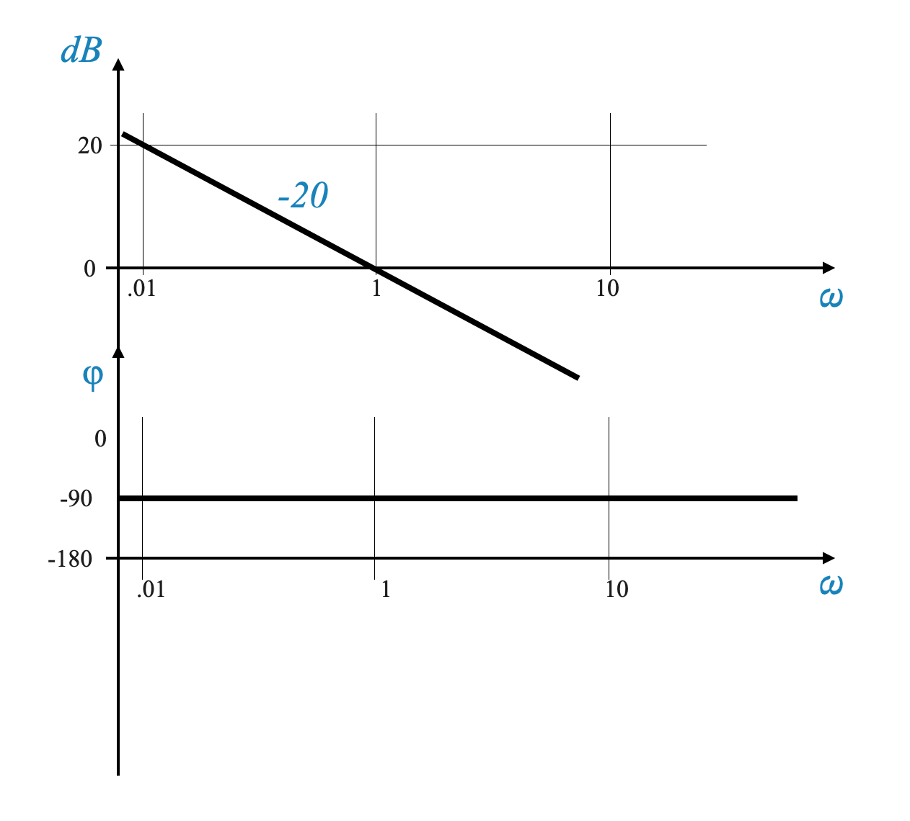
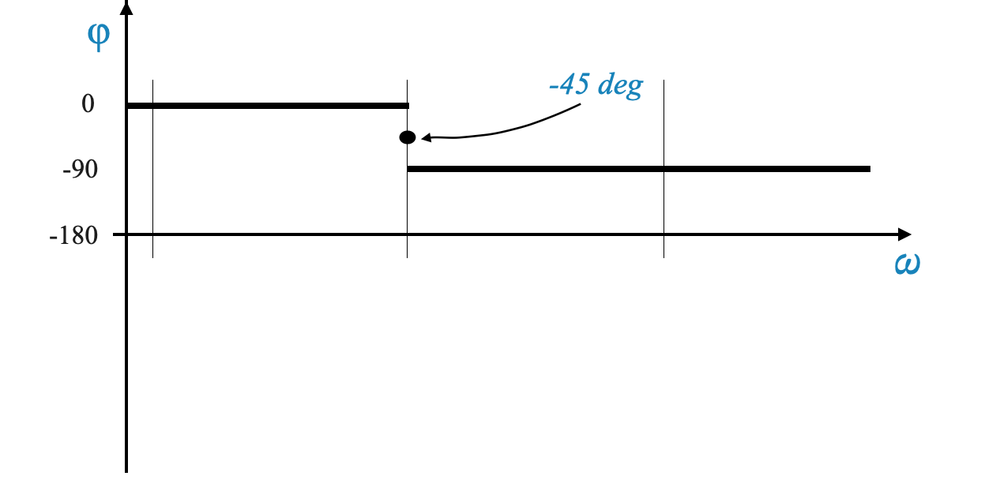
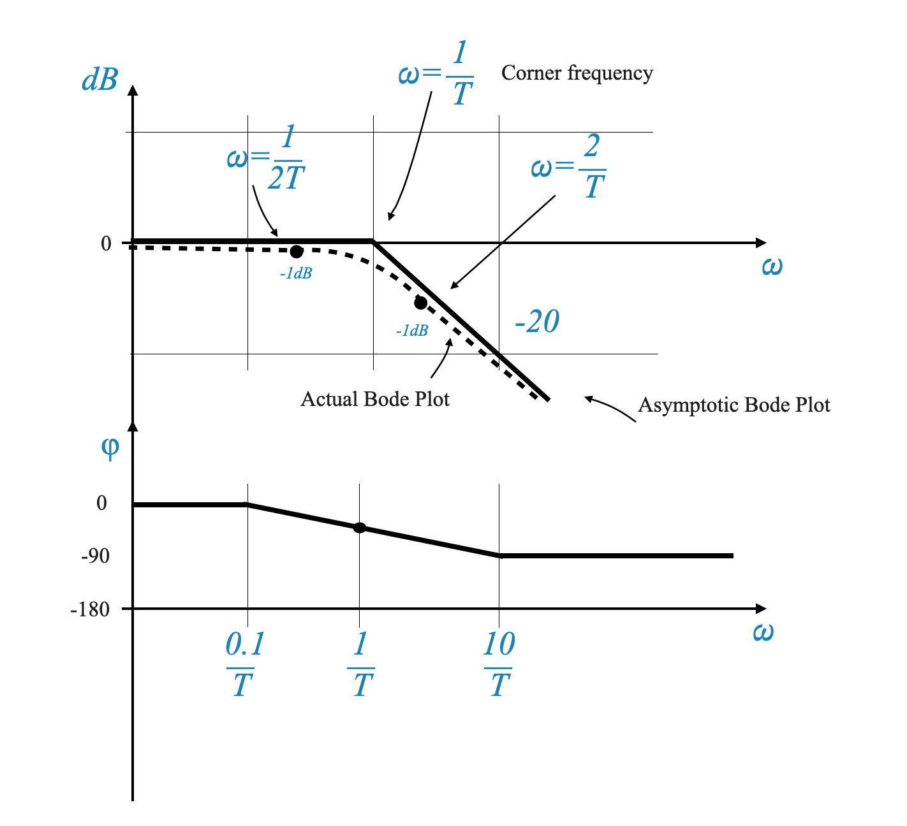
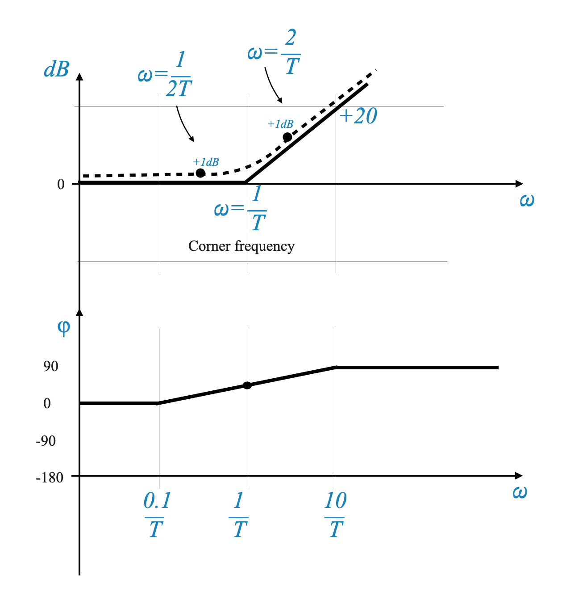

Nel quadro del criterio di stabilità di Nyquist, un aspetto significativo che richiede attenzione è l’applicazione dei grafici di Bode per analizzare il margine di guadagno, il margine di fase e la stabilità complessiva del sistema.
Il diagramma di Nyquist e la sua intensità computazionale
Il diagramma di Nyquist, uno strumento essenziale nella teoria del controllo, visualizza graficamente la risposta in frequenza di un sistema
\[ G(j\omega)H(j\omega) \]
che comprende sia l’ampiezza che l’angolo di fase della funzione di trasferimento su un intervallo di frequenze.
La costruzione di un diagramma di Nyquist richiede il calcolo di questi componenti per un continuo di frequenze, tipicamente da 0 a infinito. Questo processo, come puoi immaginare, comporta ampi sforzi computazionali.
Metodo della Semplificazione di Bode
Per alleviare il carico computazionale associato ai grafici di Nyquist, Hendrik W. Bode ha introdotto un metodo più efficiente. L’approccio di Bode semplifica la visualizzazione dei dati di risposta in frequenza trasformando i grafici complessi in semplici linee asintotiche. Questa trasformazione si ottiene attraverso il ridimensionamento logaritmico dell’ampiezza e della fase della funzione di trasferimento.
Questa semplificazione rende possibile eseguire il Fequency Design sui Plot di Bode e non sul Plos di Nyquist.
L’essenza dell’analisi del diagramma di Bode
Prendiamo una forma generica per una funzione di trasferimento:
Questo approccio scompone la funzione di trasferimento in componenti additivi più semplici.
Rappresentazione logaritmica: Prendendo il logaritmo delle componenti della funzione di trasferimento, i termini moltiplicativi in ​​$ G(j)H(j) $ diventano additivi. Ciò facilita la creazione di grafici di Bode con calcoli minimi.
Scala logaritmica e linee rette: il metodo di Bode utilizza scale logaritmiche su entrambi gli assi del grafico. Questa scelta fa sì che le singole componenti della funzione di trasferimento, quando tracciate, appaiano come (quasi) linee rette. L’aggiunta di questi segmenti lineari fornisce una visualizzazione chiara e completa della risposta in frequenza del sistema.
Nei grafici di Bode l’asse delle frequenze è rappresentato su scala logaritmica, essenziale per l’analisi dei sistemi di controllo. Su tale scala, la nozione di “frequenza zero” non è definita e, pertanto, le frequenze tipicamente vanno da un valore basso (ma diverso da zero) a un valore elevato. Questa caratteristica del diagramma di Bode offre un vantaggio significativo per l’analisi del sistema di controllo.
I sistemi di controllo spesso funzionano come filtri passa-basso, nel senso che si occupano principalmente dei segnali nella gamma delle basse frequenze. Tuttavia, è altrettanto importante considerare l’impatto del rumore ad alta frequenza. La natura logaritmica dell’asse delle frequenze del diagramma di Bode consente una rappresentazione efficace di entrambi questi aspetti.
In una scala di frequenza lineare, come quella utilizzata nei grafici di Nyquist, accogliere un’ampia gamma di frequenze può portare a una rappresentazione compressa della gamma di basse frequenze, dove le caratteristiche prestazionali di un sistema sono più rilevanti. Al contrario, la gamma delle alte frequenze, cruciale per comprendere la reiezione dei disturbi, potrebbe non essere adeguatamente rappresentata a causa delle limitazioni di spazio sul grafico.
La scala logaritmica utilizzata nei grafici di Bode risolve elegantemente questi problemi. Allunga la regione delle basse frequenze, consentendo un’analisi più dettagliata del comportamento del sistema in questa gamma cruciale. Allo stesso tempo, adatta efficacemente anche la gamma delle alte frequenze. Questa doppia funzionalità consente una visione completa delle prestazioni del sistema su un ampio spettro di frequenze, il che è particolarmente vantaggioso per l’analisi e la progettazione dei sistemi di controllo.
Calcoli di grandezza e fase
Grandezza: Considera il logaritmo della grandezza di ciascun termine.
Unità di grandezza: Nei sistemi di controllo, la grandezza di una funzione di trasferimento è spesso espressa in decibel (dB). La formula per convertire una magnitudo senza unità $ M $ in decibel è $ 20 _{10}(M) $.
Motivazione per l’utilizzo dei decibel: L’unità decibel, originata dall’ingegneria delle comunicazioni, fornisce una scala standardizzata e pratica per la rappresentazione della magnitudo. Anche se si potrebbe sostenere l’uso del logaritmo naturale o di una scala logaritmica semplice, l’ubiquità dell’unità decibel e la compatibilità con il metodo di Bode ne fanno la scelta preferita.
Definizione: Un’unità logaritmica utilizzata per esprimere l’entità di una risposta in frequenza.
Formula:\(20 \log{10}M\) dB, dove M è la magnitudo.
Significato: Fornisce una scala standardizzata per confrontare le grandezze nei sistemi di controllo.
– FINE DELLA BARRA LATERALE
La struttura dei grafici di Bode
I grafici di Bode sono costituiti da due grafici separati: 1. Grafico dell’ampiezza: questo grafico presenta la frequenza (\(\omega\)) sull’asse x e la magnitudo in decibel sull’asse y. Il grafico dell’ampiezza mostra come cambia il guadagno del sistema con la frequenza. 2. Grafico delle fasi: anche questo grafico presenta la frequenza (\(\omega\)) sull’asse x, ma l’angolo di fase (\(\phi\)) sull’asse y. Dimostra come la fase del sistema cambia con la frequenza.
Asse della frequenza: L’asse della frequenza è logaritmico, il che semplifica la rappresentazione della risposta in frequenza.
Elementi costitutivi dei grafici di Bode
Per costruire un diagramma di Bode, consideriamo i seguenti elementi costitutivi di una funzione di trasferimento:
Fattore di guadagno costante $ K $.
Zero o Polo nell’origine $ (j)^{N} $.
Fattori del primo ordine $ (1 jT)^{m} $;
Fattori del secondo ordine $ ( s^2 + s + 1)^{r} $.
Fattore di ritardo $ e^{-j_D} $.
Altri fattori che rappresentano zeri e poli sia nella metà sinistra che in quella destra del piano s.
Si noti che abbiamo preso la forma della costante di tempo dei fattori.
Si noti inoltre che il caso 3), comprende:
$ (1 - jT) $ (zero RHP) e $ $ (polo RHP)
Questi elementi vengono combinati per formare il diagramma di Bode completo, dove ciascun fattore contribuisce linearmente alla risposta complessiva.
Diagramma di Bode
Il diagramma di Bode è composto da due grafici:
Grafico dell’ampiezza: questo grafico presenta la frequenza su scala logaritmica (asse x) e l’entità della risposta del sistema in decibel (asse y).
Tracciato delle fasi: anche questo tracciato presenta la frequenza su scala logaritmica (asse x), ma l’asse y rappresenta l’angolo di fase in gradi.
Intervallo di frequenze nei grafici di Bode
Spettro di frequenza: i grafici di Bode coprono un’ampia gamma di frequenze, da quelle molto basse (vicine allo zero) a quelle molto alte.
Significato: Questa ampia gamma consente un’analisi completa della dinamica del sistema in varie condizioni.
Questo non era il caso del Nyquist dove la gamma delle basse frequenze era compressa per consentire il tracciamento fino all’infinito.
Elementi base dei grafici di Bode
I grafici di Bode vengono costruiti analizzando gli elementi costitutivi di base di una funzione di trasferimento e quindi combinandoli. Cominciamo con l’elemento costitutivo più semplice.
Elemento costitutivo 1: Guadagna $ K $
Il guadagno $ K $ in una funzione di trasferimento può essere rappresentato in un diagramma di Bode come:
Magnitudo: $ 20 (K) $ dB. Questo valore è costante su tutte le frequenze.
Graficamente, su un foglio semi-log, il grafico della magnitudo è una linea orizzontale a $ 20 (K) $ dB, mentre il grafico della fase rimane a $ 0^$.
Considerazioni sul guadagno $ K $
Se $ K > 1 $, la linea della magnitudo è sopra l’asse degli 0 dB.
Se $ K < 1 $, the magnitude line is below the 0 dB axis.
Elemento costitutivo 2: Zero o Polo nell’origine $ (j)^{N} $
Iniziamo a valutare come $ $ influenza il diagramma di Bode e poi generalizziamo il tutto:
Grandezza: $ -20 () $ dB.
Fase: $ -90^$ per tutte le frequenze.
Analisi della magnitudo
Il grafico della magnitudo è una linea retta con una pendenza di $ -20 $ dB/decade. Questa pendenza è determinata dal fatto che una variazione di frequenza di un fattore 10 (un decennio) comporta una variazione di magnitudo di $ -20 $ dB.
Nota che se prendessi la Magnitudo rispetto a \(\omega\) sarebbe una funzione non lineare (c’è il log).
Decennio e dB per decennio
Decennio: un decennio si riferisce ad un aumento di dieci volte della frequenza. Ad esempio, passare da 1 Hz a 10 Hz è un decennio.
dB per decennio: questo termine descrive come cambia la magnitudo (in decibel) nel corso di un decennio. Una linea con una pendenza di “-20 dB per decade” implica una diminuzione di 20 dB per ogni aumento di dieci volte della frequenza.
Tracciamento dei dB per decade
Costruzione della pendenza: Per illustrare una pendenza di -20 dB per decade, seleziona una frequenza di riferimento e diminuisci l’ampiezza di 20 dB per la decade successiva.
Esempio: Se inizi a 0,1 Hz, traccia una linea retta che diminuisce di -20 dB a 1 Hz, che rappresenta -20 dB per decade.
Esempio: diagramma per un polo all’origine
Considera un intervallo di frequenza compreso tra $ 0,1 $ e $ 10 $ rad/s. Su un grafico semi-logaritmico: - A $ = 0,1 $ rad/s, la magnitudo è $ -20 (0,1) = 20 $ dB. - A $ = 1 $ rad/s, la grandezza è $ -20 (1) = 0 $ dB. - A $ = 10 $ rad/s, la magnitudo è $ -20 (10) = -20 $ dB. - Collega questi punti per formare una linea retta, che rappresenta il grafico della magnitudo.

Possiamo ora generalizzare e considerare $ $:
Grandezza: $ -40 () $ dB (cioè linea retta con pendenza di $ -40 $ dB/decade.
Fase: $ -180^$ per tutte le frequenze.
Variazione della magnitudo: per ogni termine di ritardo aggiuntivo, la pendenza del grafico della magnitudo raddoppia. Per \(1/j\omega^2\), la pendenza è di -40 dB per decennio.
Tracciamento: Inizia da \(\omega\) = 1 con un livello dB specifico ed estendi la linea con una pendenza di -40 dB per decade.
E se abbiamo uno zero (o più zeri all’origine) la forma è la stessa ma la pendenza diventa positiva.
Combinazione di guadagno e polo all’origine \(\left( \frac{K}{s} \right)\)
\[
G(s) = \frac{K}{s}
\]
Il diagramma di Bode si ottiene sommando il diagramma di \(K\) e il diagramma di \(\frac{1}{s}\).
Effetti combinati: Quando si combina un fattore di guadagno (\(K\)) con un termine (\(1/j\omega\)), il grafico della magnitudo cambia. La fase è -90.
Equazione della magnitudine: Per \(G(j\omega) = \frac{K}{j\omega}\), la grandezza in dB è \(-20 log(\omega) + 20 log(K)\).
Questa è una linea retta della forma: \(y = mx + c\).
Gamma di frequenza: Dividiamo lo spettro di frequenza in due gamme in base al prodotto \(\omega T\): - Caso 1: \(\omega T << 1\) (Low-frequency range): In this range, the term \(\omega^2T^2\) is negligible, simplifying the equation to \(dB ≈ 0\). Thus, the plot remains at 0 dB for low frequencies.
Case 2: \(\omega T >> 1\) (gamma delle alte frequenze): qui \(1\) nell’equazione diventa trascurabile, semplificandolo in \(dB = -20 log(\omega T)\). Ciò si traduce in una linea retta con una pendenza di -20 dB per decade.
Frequenza d’angolo e transizione
Frequenza angolare: La frequenza alla quale \(\omega T = 1\) è nota come frequenza angolare. Rappresenta un punto di transizione critico nel diagramma.
Tracciato della magnitudo: il tracciato passa da una linea piatta (0 dB) alle basse frequenze a una linea con una pendenza di -20 dB per decennio oltre la frequenza d’angolo.
Possiamo quindi tracciare il grafico della magnitudine:
Caso 3: A \(\omega T = 1\): L’equazione della magnitudo diventa \(dB = -10 log \sqrt{2} = -3\) dB. In questo caso, la fase è \(tan^{-1}\left(1\right) = -45^\circ\)
Possiamo verificare la differenza tra la funzione reale e l’approssimazione.
import numpy as npimport matplotlib.pyplot as plt# ConstantsT =1# You can change T as per your requirementscorner_frequency =1/ T# Frequency range from 0.1 to 100omega = np.logspace(-1, 2, 500) # 500 points between 10^-1 and 10^2# Calculating dB values for the actual plotdB_actual =-10* np.log10(1+ omega**2* T**2)# Asymptotic approximationdB_asymptotic = np.zeros_like(omega)for i, w inenumerate(omega):if w < corner_frequency: dB_asymptotic[i] =0else: dB_asymptotic[i] =-10* np.log10(w**2* T**2) # Slope of -20 dB/decade# Plotting the Bode plot and its asymptotic approximationplt.figure()plt.semilogx(omega, dB_actual, label='Actual Plot')plt.semilogx(omega, dB_asymptotic, label='Asymptotic Approximation', linestyle='--')plt.title('Bode Plot with Asymptotic Approximation')plt.xlabel('Frequency (rad/s)')plt.ylabel('Magnitude (dB)')plt.grid(which='both', axis='both')plt.legend()plt.show()
Nell’analisi del diagramma di Bode, l’uso di approssimazioni asintotiche semplifica il processo di tracciamento. Tuttavia, questo approccio può introdurre errori, soprattutto in prossimità delle frequenze d’angolo. Per migliorare la precisione del grafico, possiamo aggiungere più punti e calcolare gli errori in questi punti.
Calcoli degli errori: Gli errori nel diagramma di Bode vengono aggiunti algebricamente a frequenze specifiche per creare una rappresentazione più accurata. Ad esempio, alla frequenza d’angolo, l’errore tipico potrebbe essere -3 dB. Inoltre, possiamo calcolare gli errori nei punti un’ottava sopra e sotto la frequenza d’angolo. Un’ottava in questo contesto si riferisce al raddoppio o al dimezzamento della frequenza.
Per una rappresentazione più accurata, possiamo prendere punti aggiuntivi alle frequenze \(\omega = \frac{1}{2T}\) e \(\omega = \frac{2}{T}\). Gli errori in questi punti possono essere calcolati come segue:
Questi calcoli degli errori aiutano a perfezionare il diagramma di Bode, rendendolo più vicino alla risposta in frequenza effettiva del sistema.
La pratica comune prevede la regolazione del grafico a ω = 1/(2T) e ω = 2/T di un certo livello di dB per adattarlo fedelmente al grafico reale.
Analisi del grafico delle fasi
L’equazione primaria per il diagramma di fase nell’analisi di Bode è data da:
\[
\angle G(j\omega) = -\tan^{-1}(\omega T)
\]
Questa equazione implica:
A \(\omega = 0\), \(\angle G(j\omega) = 0^\circ\), indicando che la fase inizia a 0 gradi alle basse frequenze.
Come \(\omega \rightarrow \infty\), \(\angle G(j\omega) \rightarrow -90^\circ\), mostrando che la fase si avvicina a -90 gradi alle alte frequenze.
Alla frequenza specifica \(\omega = \frac{1}{T}\), \(\angle G(j\omega) = -45^\circ\), che è il punto medio della transizione di fase.

Costruzione del diagramma delle fasi
Tracciato della fase effettiva: Il tracciato della fase effettiva per un polo semplice passa gradualmente da 0 gradi alle basse frequenze a -90 gradi alle alte frequenze. Mentre alcuni intervalli di frequenza potrebbero consentire approssimazioni di fase costanti, il grafico reale mostra un cambiamento graduale e continuo.
Metodo di approssimazione: Un’approssimazione pratica per il diagramma di fase utilizza una linea retta che si estende da \(\omega = \frac{1}{10T}\) a \(\omega = \frac{10}{T}\). Questa approssimazione semplifica il grafico ma può introdurre un errore fino a circa \(6^\circ\). Un tale errore diventa significativo quando si calcola il margine di fase, dove la precisione è cruciale per valutare la stabilità del sistema.
Visualizzazione
I diagrammi di fase, sia approssimati che effettivi, possono essere visualizzati come mostrato di seguito. Le figure illustrano la distinzione tra il comportamento di fase reale e la sua approssimazione asintotica, evidenziando la semplicità e i potenziali errori coinvolti in quest’ultimo approccio.
Approssimazione asintotica: (immagine che mostra l’approssimazione in linea retta da \(\frac{1}{10T}\) a \(\frac{10}{T}\))
Figura: l’approssimazione asintotica è rappresentata utilizzando una linea retta per facilitare l’analisi.
Tracciato della fase effettiva:
Figura: immagine che rappresenta la transizione graduale da 0 a -90 gradi. Questo è mostrato usando lo script Python qui sotto.
import numpy as npimport matplotlib.pyplot as plt# ConstantsT =1# Time constant, you can change this as needed# Frequency range from 0.01 to 1000omega = np.logspace(-2, 3, 500) # 500 points between 10^-2 and 10^3# Calculating the actual phasephase_actual =-np.arctan(omega * T) * (180/ np.pi) # Convert to degrees# Straight-line approximationphase_approx = np.zeros_like(omega)for i, w inenumerate(omega):if w <1/ (10* T): phase_approx[i] =0elif w >10/ T: phase_approx[i] =-90else:# Linear interpolation between -45 at 1/T and -90 at 10/T phase_approx[i] = np.interp(np.log10(w), [np.log10(1/ (10* T)), np.log10(10/ T)], [0, -90])# Plotting the phase plotsplt.figure()plt.semilogx(omega, phase_actual, label='Actual Phase')plt.semilogx(omega, phase_approx, label='Straight-line Approximation', linestyle='--')plt.title('Phase Plot for a Simple Pole')plt.xlabel('Frequency (rad/s)')plt.ylabel('Phase (degrees)')plt.grid(which='both', axis='both')plt.legend()plt.show()
Riepilogo: polo semplice o ritardo semplice (1/(1 + jωT))
\[G(s) = \frac{1}{1 + j\omega T}\]

Zero semplice (1 + jωT)
\[
G(s) = 1+j\omega T
\]
Tracciato asintotico: Per uno zero, il tracciato asintotico di Bode inizia con una pendenza crescente di +20 dB per decade alla frequenza d’angolo (1/T).
Regolazione della precisione: per creare un grafico più accurato, regola il grafico asintotico a frequenze specifiche (come ω = 1/(2T) e ω = 2/T) aggiungendo livelli dB.

Diagramma di Bode per un doppio polo (1/(1 + jωT)²)
\[
G(s) = \frac{1}{(1+j\omega T)^2}
\]
Pendenza della linea: Per un doppio polo, la linea nel diagramma di Bode ha una pendenza di -40 dB per decade, con aggiustamenti per errori intorno a questa frequenza.
Frequenza angolare: La frequenza angolare, dove ωT = 1, è il punto in cui si verifica il cambiamento di pendenza.
Analisi degli errori nei grafici di Bode
Calcoli degli errori: Gli errori nel diagramma di Bode vengono aggiunti algebricamente a frequenze specifiche per creare una rappresentazione più accurata. Ad esempio, alla frequenza d’angolo, l’errore è di -6 dB, con errori aggiuntivi di -2 dB un’ottava sopra e sotto la frequenza d’angolo.
Fattori del secondo ordine
\[
G(s) = \frac{1}{\frac{1}{\omega_n^2}s^2 + \frac{2\zeta}{\omega_n} s + 1}
\]
Margine di fase e margine di guadagno nei grafici di Bode
Frequenza crossover del guadagno: questa è la frequenza alla quale l’ampiezza della risposta del sistema è pari a 1 (o 0 dB). È fondamentale per l’analisi della stabilità.
Margine di fase: Il margine di fase è lo spostamento di fase aggiuntivo necessario per portare il sistema sull’orlo dell’instabilità. Viene calcolato dal diagramma di fase alla frequenza di crossover del guadagno.
Analisi del margine di fase:
Il margine di fase rappresenta l’angolo di fase aggiuntivo che può essere aggiunto al sistema prima che raggiunga un angolo di fase di -180 gradi.
Margine di fase positivo: se il grafico è al di sopra della linea di -180 gradi in corrispondenza della frequenza di crossover del guadagno, il margine di fase è positivo, indicando un sistema stabile.
Margine di fase negativo: Al contrario, se il grafico è al di sotto della linea di -180 gradi, si tratta di un margine di fase negativo, suggerendo una potenziale instabilità.
Definizione della frequenza di crossover di fase: La frequenza di crossover di fase è il punto in cui l’angolo di fase della risposta del sistema diventa -180 gradi. Questa frequenza è fondamentale nel determinare la stabilità del sistema.
Analisi del margine di guadagno
Calcolo del margine di guadagno: Il margine di guadagno è il guadagno aggiuntivo che può essere aggiunto al sistema prima che diventi instabile. Si misura in decibel (dB).
Determinazione del margine di guadagno: Per trovare il margine di guadagno, individuare la frequenza di crossover di fase sul grafico della magnitudo. La distanza (in dB) da questo punto alla linea 0 dB rappresenta il margine di guadagno.
Costruzione di grafici di Bode per funzioni di trasferimento specifiche
Esempio:
\[
G(s) = \frac{k}{s(1 + sT_1)(1 + sT_2)}
\]
Costruzione del grafico della magnitudine: Inizia tracciando il grafico a bassa frequenza per K = 10. Quindi, aggiungi grafici per ciascun fattore (1/s, 1 + sT1, 1 + sT2) e regola la pendenza a ciascuna frequenza d’angolo .
Approccio: Ad ogni frequenza d’angolo, aggiungi o sottrai livelli dB in base al cambiamento netto della pendenza. Ad esempio, a una frequenza d’angolo in cui la pendenza diminuisce, sottrarre i livelli dB per correggere il grafico.
Risposta: I grafici di Bode semplificano la visualizzazione e l’interpretazione della risposta in frequenza di un sistema convertendo complessi grafici polari in semplici grafici logaritmici. Questa semplificazione è particolarmente utile per comprendere il guadagno e i margini di fase del sistema.
Risposta: I decibel forniscono una scala logaritmica che semplifica il confronto di diverse grandezze, facilitando l’analisi e la progettazione dei sistemi di controllo.
Domanda pop-up: Cosa indica un margine di guadagno positivo sulla stabilità di un sistema?
Risposta: Un margine di guadagno positivo indica che un sistema può sopportare un aumento di guadagno senza diventare instabile.
Risposta: La frequenza d’angolo segna il punto di transizione in cui il comportamento del sistema cambia in modo significativo. È il punto in cui l’approssimazione della risposta in frequenza del sistema si sposta da un regime all’altro, ad esempio da una risposta piatta a una risposta inclinata.
Domanda pop-up: Qual è il significato del guadagno e dei margini di fase nei sistemi di controllo?
Risposta: Il guadagno e i margini di fase sono indicatori critici della stabilità del sistema. Un margine di fase positivo e un margine di guadagno sostanziale implicano che il sistema può tollerare un certo livello di aumento di guadagno o spostamento di fase prima di diventare instabile.